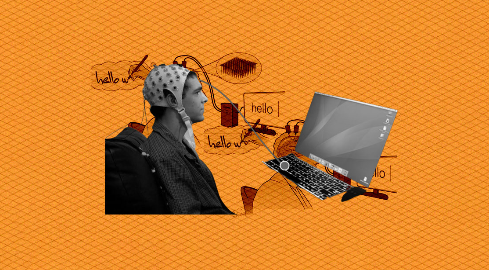

| Brain–Computer Interface | fNIRS has been successfully implemented as a control signal for brain–computer interface systems. |
| Brain Mapping | Brain mapping is a set of neuroscience techniques predicated on the mapping of (biological) quantities or properties onto spatial representations of the (human or non-human) brain resulting in maps. |
| Cerebral Oximetry | NIRS monitoring is helpful in a number of ways. Preterm infants can be monitored reducing cerebral hypoxia and hyperoxia with different patterns of activities. It is an effective aid in Cardiopulmonary bypass, is strongly considered to improve patient outcomes and reduce costs and extended stays.There are inconclusive results for use of NIRS with patients with traumatic brain injury, so it has been concluded that it should remain a research tool. |
| Diffuse Optical Tomography | Diffuse optical tomography is the 3D version of Diffuse optical imaging. Diffuse optical images are obtained using NIRS or fluorescence-based methods. These images can be used to develop a 3D volumetric model which is known as the Diffuse Optical Tomography. |
| fNIRS Cap | fNIRS electrode locations can be defined using a variety of layouts, including names and locations that are specified by the International 10–20 system as well as other layouts that are specifically optimized to maintain a consistent 30mm distance between each location. In addition to the standard positions of electrodes, short separation channels can be added. Short separation channels allow the measurement of scalp signals. Since the short separation channels measure the signal coming from the scalp, they allow the removal of the signal of superficial layers. This leaves behind the actual brain response. Short separation channel detectors are usually placed 8mm away from a source. They do not need to be in a specific direction or in the same direction as a detector. |
| Functional Connectivity | fNIRS measurements can be used to calculate functional connectivity. Multi-channel fNIRS measurements create a topographical map of neural activation, whereby temporal correlation between spatially separated events can be analyzed. Functional connectivity is typically assessed in terms correlations between the hemodynamic responses of spatially distinct regions of interest (ROIs). In brain studies, functional connectivity measurements are commonly taken for resting state patient data, as well as data recorded over stimulus paradigms. The low cost, portability and high temporal resolution of fNIRS, with respect to fMRI, have proven to be highly advantageous in studies of this nature. |
| Functional Neuroimaging | The use of fNIRS as a functional neuroimaging method relies on the principle of neuro-vascular coupling also known as the haemodynamic response or blood-oxygen-level dependent (BOLD) response. This principle also forms the core of fMRI techniques. Through neuro-vascular coupling, neuronal activity is linked to related changes in localized cerebral blood flow. fNIRS and fMRI are sensitive to similar physiologic changes and are often comparative methods. Studies relating fMRI and fNIRS show highly correlated results in cognitive tasks. fNIRS has several advantages in cost and portability over fMRI, but cannot be used to measure cortical activity more than 4 cm deep due to limitations in light emitter power and has more limited spatial resolution. fNIRS includes the use of diffuse optical tomography (DOT/NIRDOT) for functional purposes. Multiplexing fNIRS channels can allow 2D topographic functional maps of brain activity (e.g. with Hitachi ETG-4000, Artinis Oxymon, NIRx NIRScout, etc.) while using multiple emitter spacings may be used to build 3D tomographic maps. |
| Hyperscanning | Hyperscanning involves two or more brains monitored simultaneously to investigate interpersonal (across-brains) neural correlates in various social situations, which proves fNIRS to be a suitable modality for investigating live brain-to-brain social interactions. |
| Hypoxia and Altitude Studies | With our constant need for oxygen, our body has developed multiple mechanisms that detect oxygen levels, which in turn can activate appropriate responses to counter hypoxia and generate a higher oxygen supply. Moreover, understanding the physiological mechanism underlying the bodily response to oxygen deprivation is of major importance and NIRS devices have shown to be a great tool in this field of research. |
| Music and the Brain | fNIRS can be used to monitor musicians’ brain activity while playing musical instruments. |
| Virtual and Augmented Reality | Modern fNIRS systems are combined with virtual or augmented reality in studies on brain-computer interfaces, neurorehabilitation or social perception. |
| ← Description | History → |